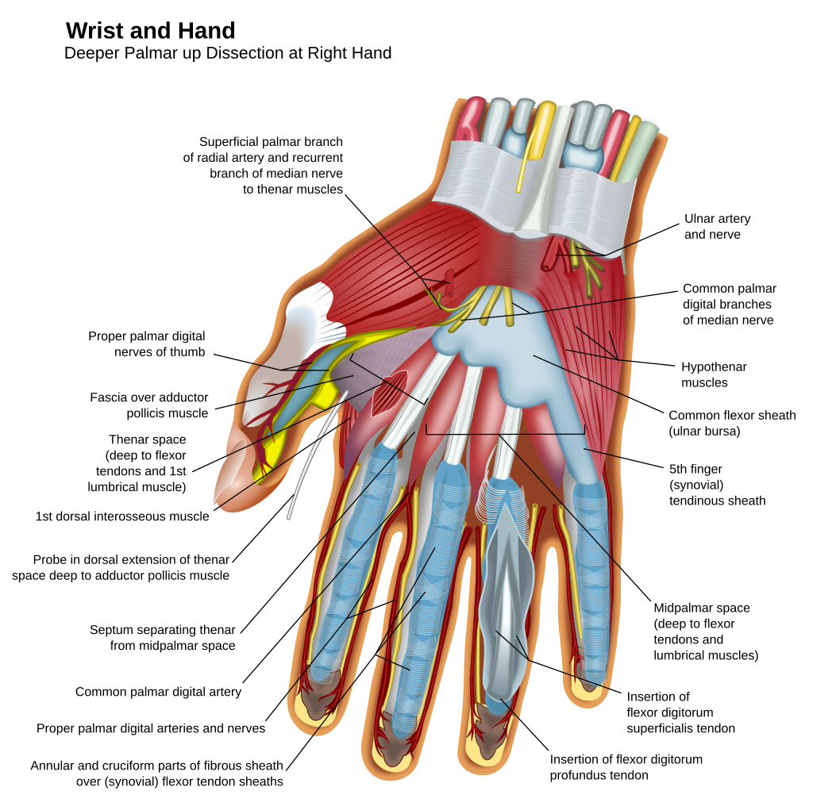

You:
The topic that I would like to discuss is: muscles of the hand.
Curious Student
1. How do the intrinsic muscles of the hand contribute to fine motor control for tasks like writing or playing musical instruments?
2. Why is the arrangement of tendons and ligaments in the hand so crucial for strength and dexterity?
3. How do the extrinsic muscles of the forearm interact with intrinsic hand muscles for grip and pinch?
4. Why are the thenar and hypothenar muscle groups anatomically distinct, and how does their separation influence function?
5. How does the interplay between palmar and dorsal interossei affect delicate tasks like finger spreading or adduction?
You:
1. Intrinsic muscles like lumbricals and interossei enable precise individual finger movements for writing or instrument playing.
2. Tendons and ligaments ensure both power and precision, while structures like the flexor retinaculum prevent bowstringing.
3. Extrinsic forearm muscles supply gross movement; intrinsic muscles fine-tune these for actions like gripping and pinching.
4. Thenar and hypothenar groups are distinct for independent thumb and pinky control — vital for grip and dexterity.
5. Palmar interossei adduct fingers, dorsal interossei abduct them; together they enable intricate hand maneuvers.
Visual Learner
Thank you! Could you provide a labeled sketch showing:
1. Intrinsic hand muscles (lumbricals, interossei)
2. Tendons and ligaments (flexor tendons, retinaculum)
3. Extrinsic forearm muscles (FDS, ED)
4. Thenar and hypothenar eminences
5. Palmar and dorsal interossei movements

Clinical Learner
The image depicts tendons, nerves, muscles, and vessels in the hand.
Here are clinical questions:
- How does carpal tunnel syndrome affect function?
- Consequences of extensor tendon injuries?
- Diagnosing acute vs chronic vascular compromise?
- How to assess intrinsic muscle function?
- Management options for trigger finger?
You:
1. Median nerve compression causes numbness, weakness in thumb, index, middle fingers; Tinel’s & Phalen’s tests help diagnosis.
2. Extensor tendon injuries lead to deformities like mallet finger, managed by splinting or surgery.
3. Acute ischemia causes pain, pallor, pulselessness — requires urgent care. Chronic ischemia presents with gradual symptoms.
4. Test intrinsic muscle function with manual testing and sensory checks.
5. Trigger finger treated with splinting, steroids, or surgery if persistent.